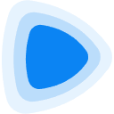
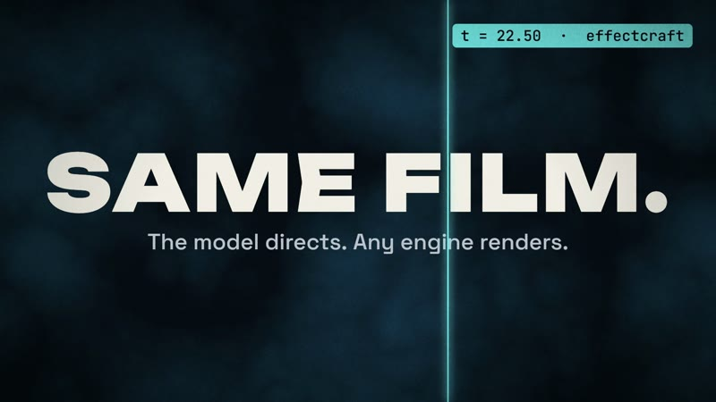
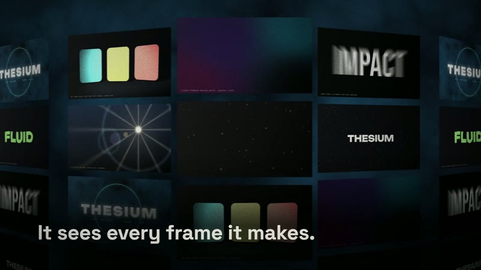

How Thesium works
One request in, a finished film out.
The model does the creative work. Thesium gives it eyes, ears and a quality gate, and the renderer only has to draw a frame.
1You
Ask for a film
“A 30-second launch film for ffmpeg.org, bold and technical.”
In Claude Code, or with one command: thesium make "…"
2The model
Directs
Plans every shot, writes the film as code, looks at its own frames and fixes what it sees.
Composes the score, places sound effects, writes the narration.
3Thesium
The studio
- Eyesstills, strips, previews
- Earsscore, effects, loudness
- Voicenarration, every word checked
- Gatechecks and QA on each master
- Finisha mastered MP4
4Any engine
Draws each frame
frame(t) → picture
the whole contract
the whole contract
Web
 EffectCraft
EffectCraft
 HyperFrames
>_Any CLI
HyperFrames
>_Any CLI
EffectCraft

RemotionHyperFrames
>_Any CLI
request
commands
frame at t
master



A finished film
out/my-film-v1.mp4: full HD, mastered sound, checked frame by frame. Then you watch it in the review studio and pin notes on the timeline.